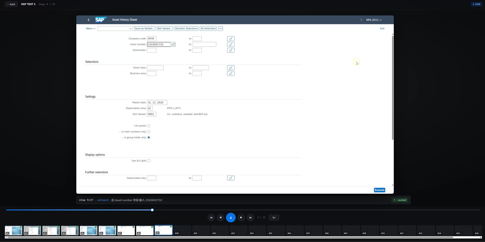
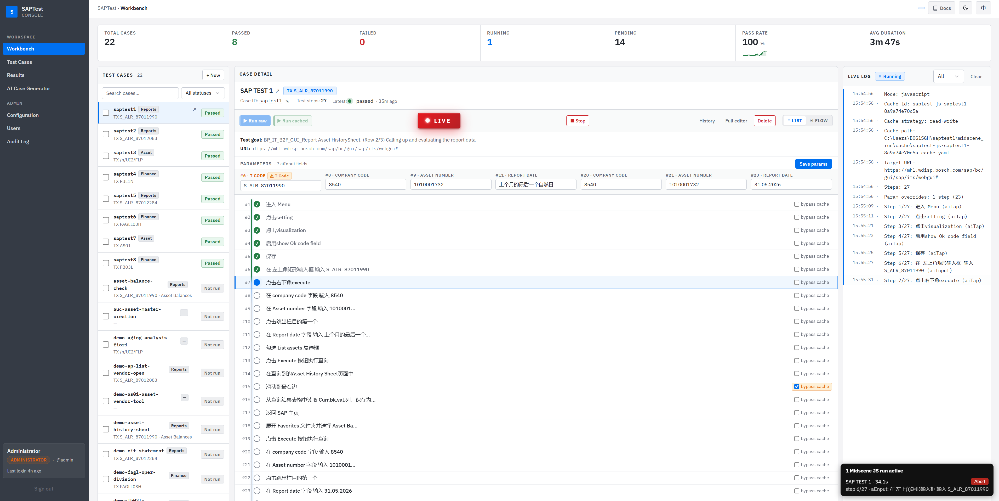
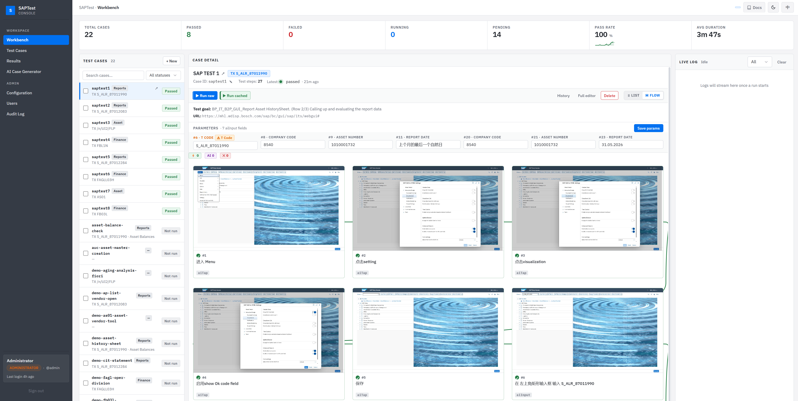
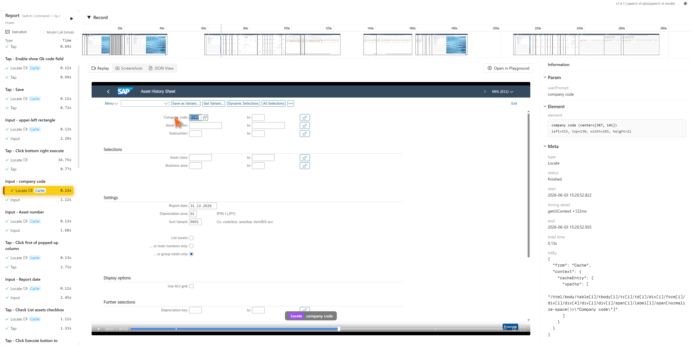
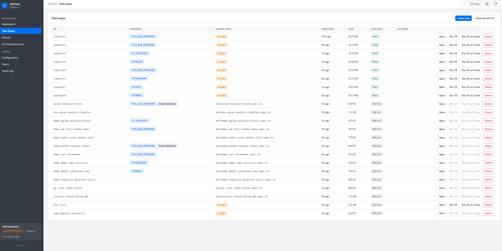
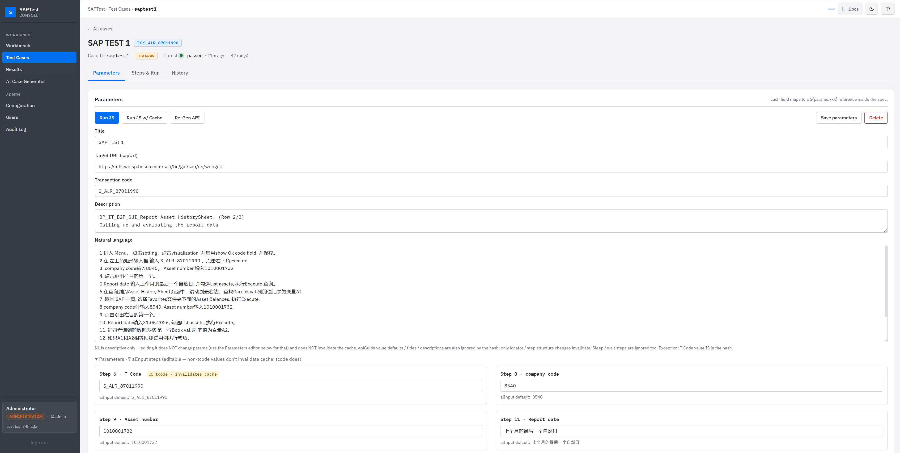

A new operating system for SAP test automation. Demonstrate a flow once, narrate it in plain words, and every keystroke becomes a permanent, parameterised asset your whole team can replay, remix, and trust.
Three structural costs every team quietly pays — and that nobody questions because there has never been an alternative.
Each release means a tester clicking through SAP screens for hours. Same flow, same fields, same fatigue. The only audit trail is a screenshot folder on someone's laptop.
Traditional automation breaks the moment a field shifts or a TCode is upgraded. Maintenance work grows until the script becomes more brittle than the test it replaced.
The person who knew the flow leaves the project. The recording lives on their laptop. The "test" exists — but nobody knows how to run it.
A trained tester clicks through the 27-step Asset Balance journey, types every input, verifies every cell — once.
Multiply by a typical library. A full pre-release sweep eats most of a working day, every release.
When SAP screens shift, every brittle locator in a Selenium-style script needs hunting down and patching.
Re-discovering what a flow does, why it exists, and how it was tested — every time the original author rolls off.
Show it once.
Say it in your own words.
Run it forever — with any inputs.
You perform the journey. The platform watches and remembers. What you did is the spec — no second authoring step.
Narrate the flow in a single paragraph of plain language. The platform converts intent into structured steps automatically.
Every input the flow touches becomes a tweakable field. One recording multiplies into unlimited variants.
Every run is filmed, every step captured, every value logged — instantly replayable, auditable, shareable.
Open SAP, complete the journey yourself, screen-record it once. No setup, no annotations, no special launcher.
Write a single paragraph in plain language — what TCode to open, which fields to fill, what the success looks like. The platform parses it into structured steps automatically.
From that point on, the case is a permanent asset. Run it on demand, fork it for a sibling scenario, swap parameters — no recording ever again.
27 steps · login → menu → asset history sheet → balance read-out · fully unattended.
Subtitle bar shows step · API · cache hit in real time. Scrub backwards anytime; one click to return to live.

Each step's API call, parameters, and cache outcome stream into the right rail as the run progresses — searchable, exportable, auditable.

The same run, indexed visually. Find a failure in two clicks. Share a single step like a screenshot.

Past runs are not log files. They are watchable, scrubbable films — full SAP screens, step-by-step, with the original subtitle stream intact.
Step timeline, captured screenshots, recorded locators, variables and assertions — one shareable artefact, no engineer required to compile it.

Discoverable, owned, version-controlled, re-runnable by anyone with access. Not buried in a single tester's mailbox.

Edit the words to change the flow. Edit the values to change the data. Re-run. Anyone on the team can read or revise.

Once a case exists, swapping any input — a company code, an asset, a date — produces a different test run without touching the recording. What used to be N tests is now one parameterised asset.
A trained tester clicks through every screen, types every input, verifies every cell — by hand, every time.
Re-derives every UI locator from scratch. Used after a SAP screen change or when you want a freshly captured evidence set.
Replays the previously discovered map. Same coverage, dramatically faster — the mode you use for regression sweeps.
The platform's next horizon: you don't even author the case. You hand the agent a screen-recording and a plain-language description of what was done — the agent assembles the structured case for you, parameterised and ready to multiply.
Hit record on your screen for the SAP journey — no special launcher, no annotation.
One paragraph of plain language. What you did. What success looks like.
Structured, parameterised, replayable. Swap inputs for unlimited variants from day zero.
The unit of test authoring shrinks from hours of scripting to a recording + a paragraph.
The platform is live, the runtime is proven, the library is open. One recorded case is all it takes for the compounding effect to start.